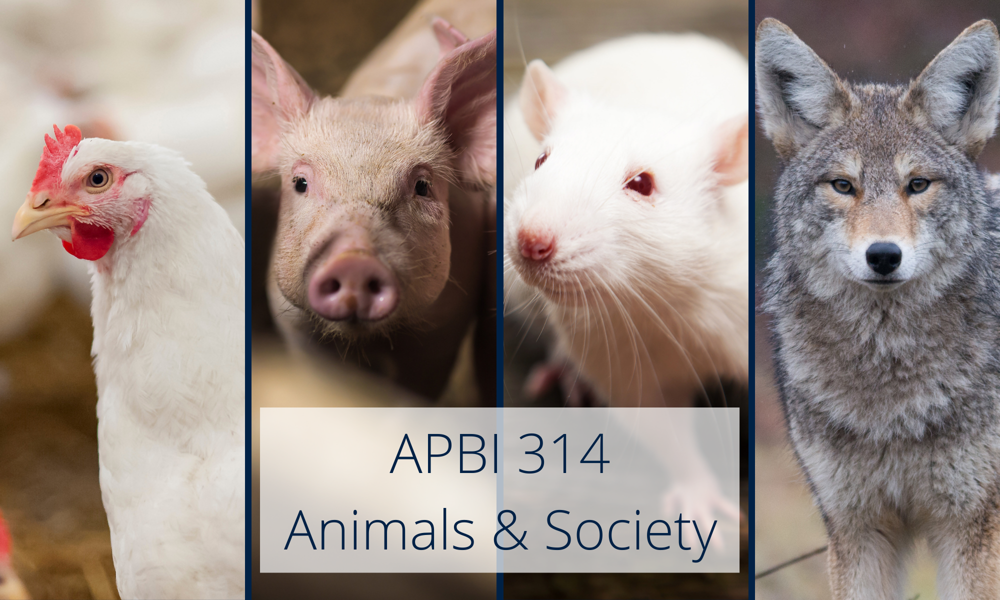

The class meets on Tuesday and Thursday, 14:00-15:20, in the Aquatic Ecosystems Research Laboratory room 120. UBC is located on the traditional, ancestral, and unceded territory of the xʷməθkʷəy̓əm (Musqueam) people whose culture includes a distinctive understanding of animals that people have passed from one generation to the next on the site now occupied by the university.
We all enjoy the course, so rather than creating restrictive office hours, the instructors are happy to speak with students whenever it is mutually convenient. Send us an email and we will do our best to respond within a day or two! You can also try stopping by the office: if Nina's office door is open, she is usually around!
The first half of the course will deal with animals in food production because of its huge significance in human society around the world. The other classes will deal with animals in science, companion animals, animal protection, wild and zoo animals, and animals in human culture.
Two background readings will be available on Canvas for each class: the first is required before coming in class, but the second is there only if you would like to know more about the topic.
Instructors will also use visuals (slides etc.) for some in-class presentations but not all will be posted online. This is because the learning objectives are not factual recall of material presented in class. Rather, the materials and discussion in class provide illustrations to help people meet the objectives to “become aware of the use of animals in contemporary society” and “develop the ability to find, evaluate and use information”. Factual recall of lecture notes is not an objective of the course.
If you like courses where you can attend sporadically and rely on memorizing lecture notes posted online, this course is not for you.
The evaluation is divided in 5 assignments, the participation, and the oral presentation. The number of marks on Canvas are only used to create rubrics and facilitate grading by the instructors. The contribution of each assignment to the final grade is listed below.
| Value in final grade | |
| Oral presentation | 5% |
| Assignment 1 | 10% |
| Assignment 2 | 20% |
| Assignment 3 | 20% |
| Assignment 4 | 15% |
| Assignment 5 | 20% |
| Participation | 10% |
| TOTAL | 100% |
The assignments are take-home problem-solving scenarios where students use concepts discussed in class, do their own fact-finding from available sources, and solve a problem. Students will be required to summarize their findings either in a short essay, a poster format, or a narrated Powerpoint. To mark the assignments, instructors prepare a rubric based on how an expert would respond with key elements that need to be included plus other elements that could also be included. The rubric is then applied to everyone’s work.
Many of the in-class and before-class activities involve some kind of activity that is posted on Canvas. Students can get up to 10 marks for participation based on completing those activities (1 point per class that requires participation).
UBC provides resources to support student learning and to maintain healthy lifestyles but recognizes that sometimes crises arise and so there are additional resources to access including those for survivors of sexual violence. UBC values respect for the person and ideas of all members of the academic community. Harassment and discrimination are not tolerated nor is suppression of academic freedom. UBC provides appropriate accommodation for students with disabilities and for religious observances. UBC values academic honesty and students are expected to acknowledge the ideas generated by others and to uphold the highest academic standards in all of their actions. Details of the policies and how to access support are available on the UBC Senate website.
This course will follow the UBC policies regarding the response to COVID-19. You can access updated information on COVID-19 the UBC's response here: https://covid19.ubc.ca Some UBC guidelines to follow during in-person classes are:
This course involves a lot of writing for assignments. Before taking the course, make sure you are very clear on what constitutes plagiarism. Everything should be written “from scratch” in your own words. If you want to include text from any source – a paper, the internet, or another student – the material should appear in quotation marks and the source should be clearly acknowledged. You can consult the page on Plagiarism, or ask an instructor if you are in any doubt. Plagiarism of any kind is academic misconduct and will result in UBC disciplinary measures.